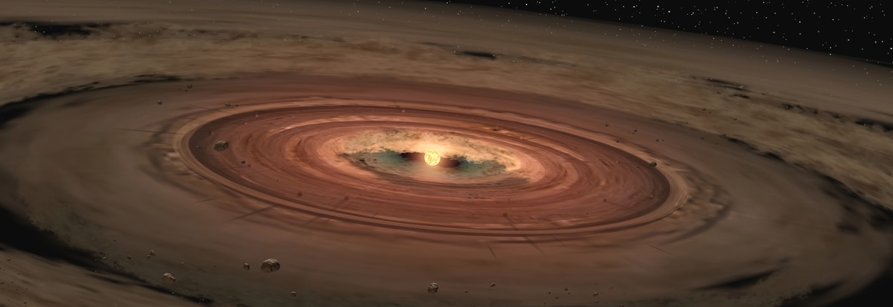

Opprinnelse
Forklaringer på solsystemets opprinnelse og utvikling er et av de vanskeligste feltene i kosmogonien. Observerte fortetninger i enorme skyer av gass og støv tolkes som stjerner under dannelse. Vår sol har trolig oppstått i sentrum av en slik fortetning. Materiale som ble til overs i en kuleformet sky rund Solen har gjennom interne kollisjoner ført til utflating av skyen til en såkalt protoplanetarisk skive og konsentrasjoner av støv og gass til protoplaneter.
Det faktum at planetene beveger seg i nesten samme plan og i nær sirkulære baner, er en sterk indikasjon på at de har oppstått slik. Denne teorien styrkes ytterligere av at det med moderne teleskoper er observert skiver av støv og gass rundt flere stjerner i Melkeveien. Dette viser at dannelsen av planetsystemer rundt stjerner er en normal utvikling og ikke et sjeldent fenomen, slik mange trodde tidligere. Trolig finnes det flere millioner solsystemer på forskjellige utviklingstrinn bare innenfor Melkeveien.